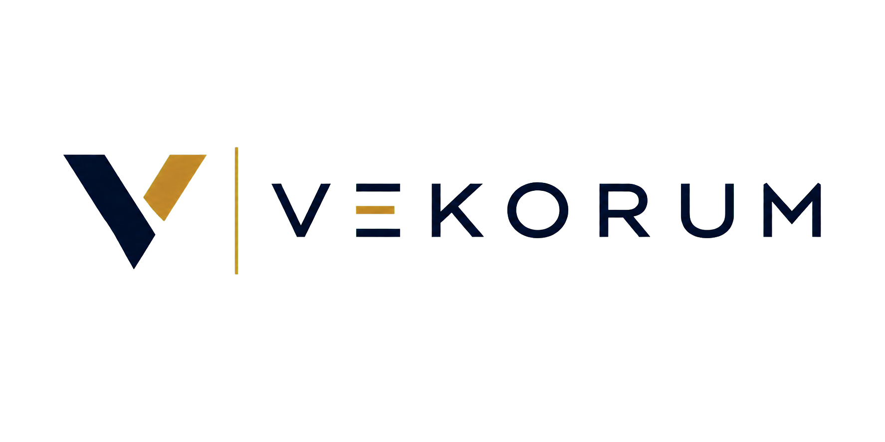

Hyperscale Data Centre Delivery
Experience supporting programme governance, commissioning coordination, knowledge management, project reporting, and delivery excellence across mission-critical data centre programmes.

VEKORUM's perspective is informed by the founder's professional experience in project management, capital project delivery, infrastructure programmes, hyperscale data centre delivery, digital transformation, supply chain management, organisational improvement, and business transformation across public and private sectors. Experience described on this page includes work completed before VEKORUM was founded.
Prior professional experience that informs how VEKORUM approaches governance, coordination, and complex delivery.
Experience supporting programme governance, commissioning coordination, knowledge management, project reporting, and delivery excellence across mission-critical data centre programmes.
Experience supporting the planning, coordination, governance, and delivery of complex infrastructure and capital projects across commercial, transportation, and public sector environments.
Experience supporting organisations in modernising operations through Microsoft technologies, automation, knowledge management, and business process improvement.
Experience contributing to operational improvement through inventory optimisation, vendor coordination, process improvement, and cross-functional collaboration.
Experience helping organisations strengthen governance, coordinate multidisciplinary teams, improve decision-making, manage delivery risk, and execute complex initiatives with confidence.